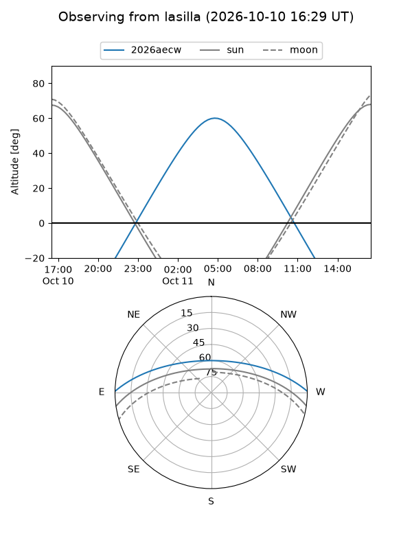
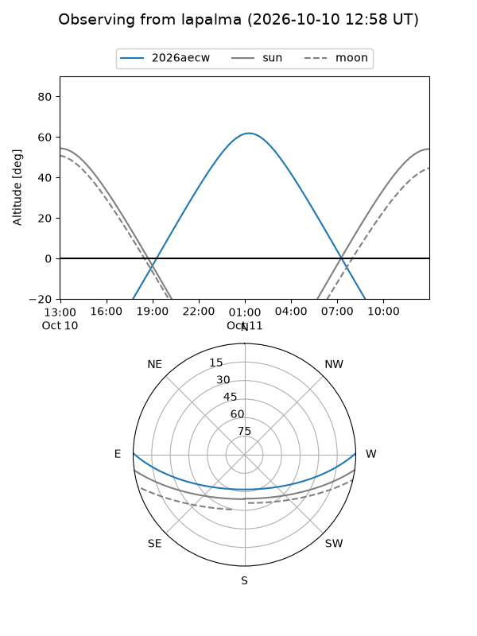
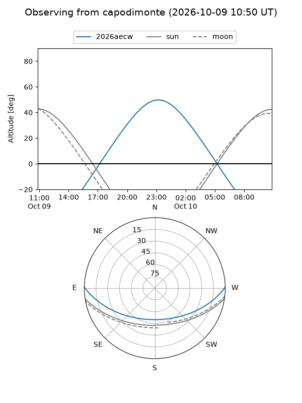
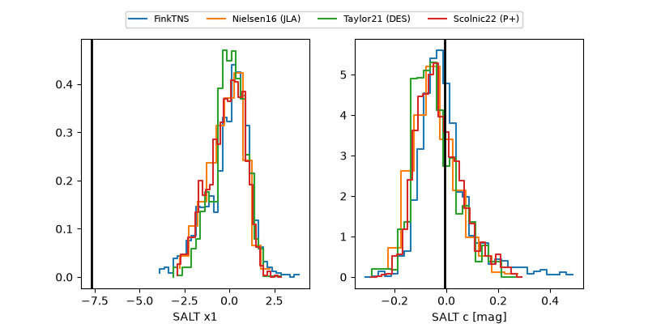

2026aecw
Target 2026aecw at 2026-10-09 13:16
Aliases and brokers:
FINK-ZTF: ztf.fink-portal.org/ZTF26abysfik
Lasair-ZTF: lasair-ztf.lsst.ac.uk/objects/ZTF26abysfik
ALeRCE-ZTF: alerce.online/object/ZTF26abysfik
YSE-PZ: ziggy.ucolick.org/yse/transient_detail/2026aecw
TNS name: wis-tns.org/object/2026aecw
Direct TNS query: direct search
alt names
ZTF26abysfik (ztf,fink_ztf)
2026aecw (tns,yse)
Coordinates:
equatorial (ra, dec) = 20.5032,+0.52178
equatorial (HMS+DMS) = 01:22:00.77,+00:31:18.42
galactic (l, b) = (139.0584,-61.38897)
Flags:
peak dt: +5.0
Photometry:
last ztfg=20.03, ztfr=19.93
6 ztfg, 5 ztfr detections
Lightcurve
Visibility



Additional plots
